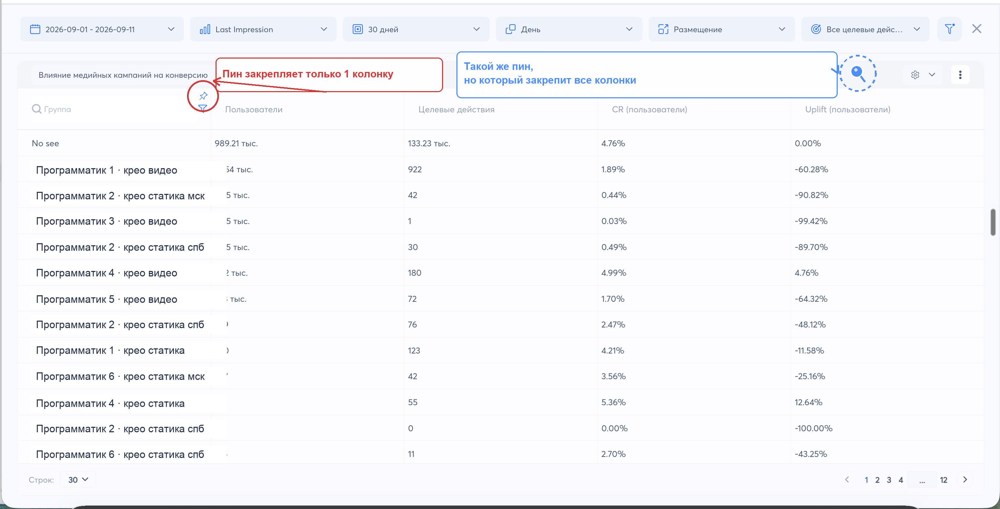

Это главное: такая правка решила бы все проблемы, не пришлось бы прыгать по разным дашикам и отчетам.
Было бы удобно в одном окне забирать всю нужную статистику с разбивкой по источнику и размещению.
Мне нужно создать свой отчет — кастомный, со всеми метриками, которые я еженедельно заполняю в своем отчете маркетолога:
И выводить всех подрядчиков в один дашик с нужными мне метриками.
Когда раз в неделю заполняю отчет, приходится прыгать:
Сделать формат, как в привычных рекламных кабинетах (ВК, TikTok Ads и др.), где видим и на уровне общем, и в разбивке.
1) Я выбираю в фильтрах:
2) Вижу стату по отдельности по каждому размещению и в целом по всем общий результат.
Тк мне нужно и сравнивать подрядчиков между собой, и в сумме смотреть, как отработали, например:
Сейчас приходится выгружать стату в иксельку, самой считать.
| Группа | Пользователи | Целевые действия | CR (пользователи) | Uplift | Доля IVT | Доля видимых показов | Пост-вью оплаты | Пост-вью сумма оплат |
|---|---|---|---|---|---|---|---|---|
| No see | 989,21 тыс. | 133,23 тыс. | 4,8% | 0,0% | — | — | — | — |
| ▾Программатик 1 | 20,0 тыс. | 401 | 2,0% | −52% | 3,4% | 85% | 120 | 1,2 млн ₽ |
| ▾крео статика | 8,0 тыс. | 161 | 2,0% | −49% | 4,7% | 79% | 40 | 420 тыс. ₽ |
| крео статика спб | 5,0 тыс. | 95 | 1,9% | −52% | 4,5% | 80% | 25 | 260 тыс. ₽ |
| крео статика мск | 3,0 тыс. | 66 | 2,2% | −45% | 5,0% | 78% | 15 | 160 тыс. ₽ |
| ▾крео видео | 12,0 тыс. | 240 | 2,0% | −55% | 2,5% | 90% | 80 | 780 тыс. ₽ |
| крео видео спб | 7,0 тыс. | 150 | 2,1% | −52% | 2,4% | 91% | 48 | 470 тыс. ₽ |
| крео видео мск | 5,0 тыс. | 90 | 1,8% | −59% | 2,7% | 88% | 32 | 310 тыс. ₽ |
| ▸Программатик 2 | 15,0 тыс. | 300 | 2,2% | −38% | 4,0% | 83% | 95 | 900 тыс. ₽ |
Мне нужно смотреть CR Lift отдельно по каждому каналу и в сумме с другими.
Например, мы запускаем:
и такие рк еще по нескольким подрядчикам.
Мне нужно видеть:
Потому что:
Также в Таргет адс работают другие команды, и больше половины источников мне не нужны, хотелось бы сделать фильтр только по своим.
Сейчас такого фильтра по каналу нет.
Поэтому, чтобы посмотреть каждый канал отдельно и в сумме, мне приходится выгружать все в иксельку и сводить это все руками.
Добавить фильтр по каналу в CR Lift, чтобы смотреть отдельно по каждому каналу и вместе с выбранными.
| Группа | Пользователи | Целевые действия | CR (пользователи) | Uplift |
|---|---|---|---|---|
| Итого по выбранным · только статика | 16,0 тыс. | 314 | 2,0% | −51% |
| No see | 989,21 тыс. | 133,23 тыс. | 4,8% | 0,0% |
| ▾Программатик 1 | 8,0 тыс. | 161 | 2,0% | −49% |
| крео статика спб | 5,0 тыс. | 95 | 1,9% | −52% |
| крео статика мск | 3,0 тыс. | 66 | 2,2% | −45% |
| ▾Программатик 2 | 8,0 тыс. | 153 | 1,9% | −52% |
| крео статика спб | 5,0 тыс. | 90 | 1,8% | −55% |
| крео статика мск | 3,0 тыс. | 63 | 2,1% | −48% |
Мне нужно оценивать лифт за 2–3–4 месяца — в медийке мы почти никогда не оцениваем лифт за месяц.
Раньше лифты можно было смотреть только за 30 дней, а за 90 нельзя, например.
Также приходилось выгружать себе в иксельку, что-то самой сводить нужный отчет, считать в сумме по подрядчику.
Чтобы можно было смотреть лифт за 90 дней и больше, за 2–3–4 месяца.
Мне нужно, чтобы в лифтах всегда стояли мои колонки по пользователям.
Обращаюсь к отчету, бывает, несколько раз в неделю: сравнить подрядчиков, кого-то забыла посмотреть, кому-то из подрядчиков надо цифры скинуть.
Каждый раз надо выбирать колонки по пользователям вместо сессий.
Закрепить выбор колонок в лифтах. У вас уже есть пин на одну колонку, сделать такой же, но на всю раскладку.

Мне нужно видеть стату по IVT отдельно по разным размещениям по каждому подрядчику.
У меня 4 подрядчика, у каждого 1-2-3 размещения.
В дашборде, где мы смотрим IVT, нельзя выбрать разделение по размещениям — мне надо отдельно тыкать на каждое размещение, чтобы отдельно посмотреть IVT.
Вместе смотреть некорректно, а бывает, что по какому-то определенному размещению больше фрода, тогда я пишу подрядчикам, на что обратить внимание.
Разрез по размещениям в дашборде IVT, чтобы видеть все размещения сразу. Возможно, это вообще больше про кастомный дашик (пункт 1): чтобы я могла выбрать и размещения, и подрядчика целиком, и посчитать вместе и отдельно.
| Название | Показы | Клики | Целевые действия | Доля IVT |
|---|---|---|---|---|
| ▾Программатик 1 | 935 тыс. | 10,2 тыс. | 584 | 6,1% |
| крео видео | 520 тыс. | 6,0 тыс. | 320 | 4,5% |
| крео статика спб | 250 тыс. | 2,6 тыс. | 160 | 7,2% |
| крео статика мск | 165 тыс. | 1,6 тыс. | 104 | 8,9% |
Мне нужно сравнивать результаты по подрядчикам за несколько месяцев или в течение месяца, я это делаю в том числе с нейронками.
Приходится вручную обновлять контекст каждый раз, это также занимает время.
Подключение TargetADS к нейронке по MCP, чтобы можно было автоматически слать запрос, и она быстро доставала нужную информацию, сравнивала по нужным параметрам и так далее.